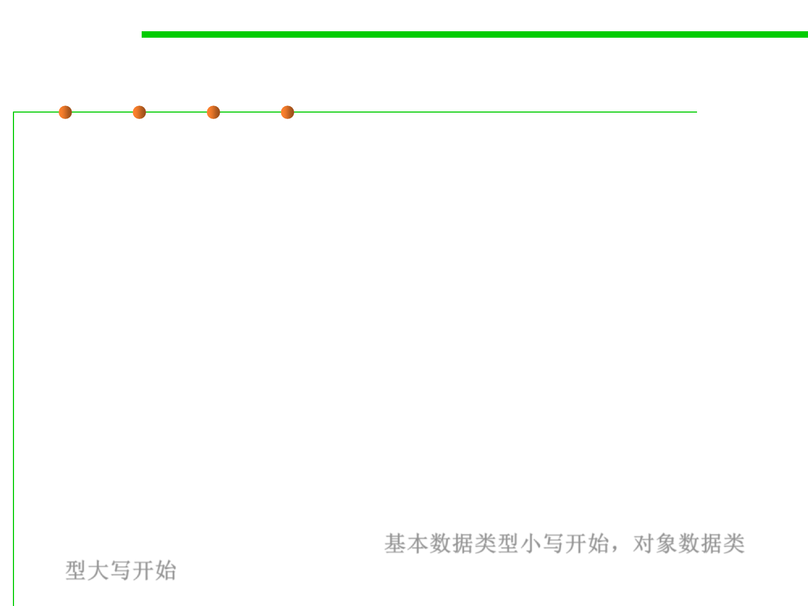

Types in Java
3.1 Data Type and Type Checking
▪ Java has several primitive types(基本数据类型) , among them:
– int (for integers like 5 and -200, but limited to the range ± 2^31, or
roughly ± 2 billion)
– long (for larger integers up to ± 2^63)
– boolean (for true or false)
– double (for floating-point numbers, which represent a subset of the real
numbers)
– char (for single characters like 'A' and '$' )
▪ Java also has object types(对象数据类型), for example:
– String represents a sequence of characters.
– BigInteger represents an integer of arbitrary size.
▪ By Java convention, primitive types are lowercase, while object
types start with a capital letter. 基本数据类型小写开始，对象数据类
型大写开始